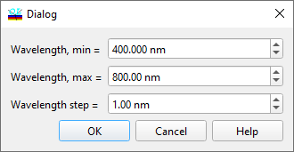

GD and GDD Report
GD and GDD Report
Navigation: OptiLayer Menu Commands > Results Menu >
GD and GDD Report
` <idh_evaluation_report_setup.html>`__ ` <idh_menu_results.html>`__ ` <idh_ellipsometry_report_setup.html>`__
Use the GD and GDD Evaluation Report Setup window to specify the spectral (Spectral mode) or angular (Angular mode) grid for the GD and GDD Evaluation Report.

In the Spectral mode, you can set a wavelength range (Wavelength min, Wavelength max), a step of the wavelength grid, and a number of spectral points for the GD and GDD Evaluation Report. When you change one of these parameters, the other parameters are kept in correspondence automatically. Press OK to run the GD and GDD Evaluation procedure and to display the GD and GDD Evaluation Report.
In the Angular Mode, you are prompted to set the range of incidence angles, the angular step, and the number of angular points.